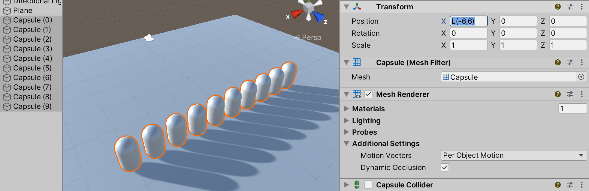
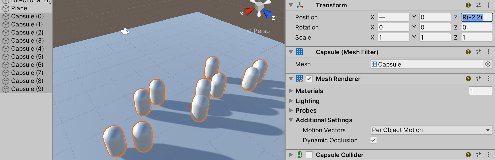
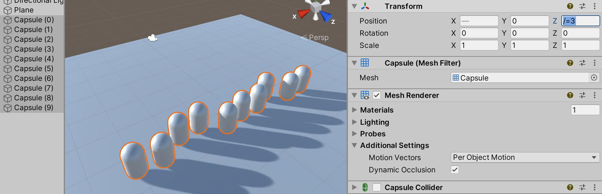
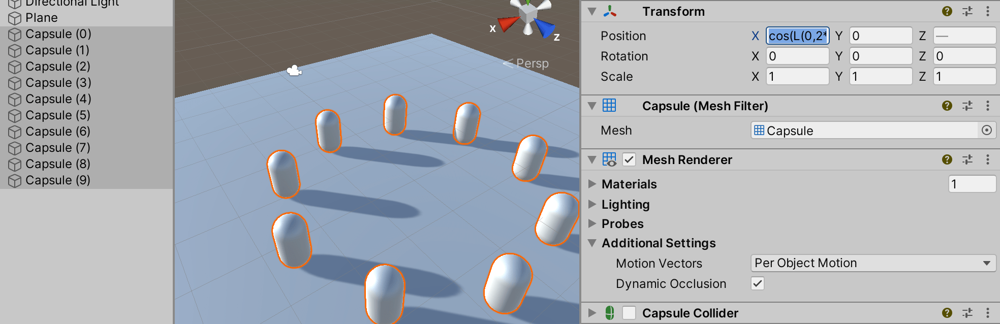

编辑属性
属性是用于游戏对象组件和资源的设置和选项。可在 Inspector 窗口中编辑属性。

属性分为以下主要类别：
- 引用：到其他游戏对象和资源的链接。
- 值：数字、颜色、开/关设置、文本等。
引用
引用属性将场景中的兼容项目资源或游戏对象作为输入。例如，Mesh Filter 组件在项目中某处引用 Mesh 资源。
创建组件时，其引用属性并未分配。

可通过将对象和资源拖放到引用属性字段，或是使用 Object Picker 窗口，将引用分配给属性。
一些引用属性接受特定类型的组件（例如，转换组件）。将游戏对象分配给这些属性时，Unity 会在游戏对象上找到所需类型的第一个组件，并将它分配给引用属性。如果游戏对象没有任何具有正确类型的组件，则无法将游戏对象分配给属性。
通过拖放分配引用
要将引用分配给属性，请将兼容游戏对象或资源拖放到 Inspector 中的属性字段上。
使用 Object Picker 窗口分配引用
使用 Object Picker 窗口查找并选择要分配的引用对象。
1.单击 Inspector 中属性右侧的小圆圈图标，以打开 Object Picker 窗口。 1.找到要引用的对象或资源，然后双击以将它分配给属性。
值
可以使用简单控件编辑大多数值属性。例如：
字段，可以在其中输入文本和数值。
可以直接在属性字段中键入数值，或单击并拖动属性标签以增大或减小值。
某些属性还具有用于调整数值的滑动条。
复选框，可以在其中打开和关闭属性。
下拉列表和弹出窗口，可以在其中选择多个可能值之一。
Numeric field expressions
Numeric field input controls also accept mathematical expressions, for example entering 2+3 into a field will
result in value 5. See ExpressionEvaluator C# class documentation for details on
which expressions are supported.
Numeric fields also support special functions that are useful when editing multiple selected objects at once:
-
L(a,b)results in linear ramp betweenaandb.

EnteringL(-6,6)into X coordinate distributes the ten selected capsules between –6 and 6. -
R(a,b)results in a random value betweenaandb.

EnteringR(-2,2)into Z coordinate sets the Z coordinate of the selected capsules to a random value between –2 and 2. -
+=,-=,*=,/=expressions can be used to modify the current value, for example entering*=2makes all the the field value twice as large.

Entering/=3into Z coordinate makes all Z coordinates 3x smaller.
You can combine math expressions. For example, you could use the expression, L(0,2*pi), which produces a
linear distribution of values between 0 and 2pi radians, as the argument of a trigonometric function.
To illustrate, the following example uses this linear ramp function as the argument to sine and cosine functions
in order to distribute a set of selected objects in a circle:

Entering cos(L(0,2*pi))*5 into X and sin(L(0,2*pi))*5 into Z coordinates places the ten selected capsules in a circle.
When writing custom inspectors, all EditorGUI.PropertyField and EditorGUILayout.PropertyField controls automatically get support for the numeric expressions.
某些游戏对象和资源具有更复杂的属性，可以使用专门控件或专用编辑器对这些属性进行编辑。本节的其余部分介绍如何设置这些复杂属性。
颜色值
Inspector 窗口将颜色属性显示为样本。
单击任何样本可打开拾色器或 HDR 拾色器（具体取决于上下文）。例如，在标准着色器中编辑发射颜色属性时，Unity 会显示 HDR 拾色器窗口。
还可以使用吸管工具从屏幕上的任何位置选取颜色值。
要选取颜色，请单击颜色属性旁的吸管按钮，然后单击屏幕上的任何位置。Unity 会将颜色属性设置为单击的像素的颜色。
可以将设置的颜色保存在可以在项目之间共享的可重用样本库中。
| 提示： |
|---|
| 在 macOS 上，可以选择使用系统拾色器而不是 Unity 的内置拾色器。通过 Preferences（菜单：Unity > Preferences）打开 General 面板并选择 macOS Color Picker。 |
渐变值
渐变是颜色渐进的视觉表示。它们可用于在空间或时间上将一种颜色逐渐混合到另一种颜色中。
在 Unity 中，可以通过设置两个或多个颜色属性来设置一些渐变。
其他渐变提供专用编辑器来控制每种颜色的相对量。
专用渐变编辑器在渐变条中显示主要颜色（称为_停靠点_）以及它们之间的所有中间色 (1)。
沿着渐变条底部的向上箭头表示颜色停靠点 (2)。
- 单击停靠点可选择它。Unity 将其颜色值显示在 Color 字段中。
- 单击颜色样本 (3) 可使用标准拾色器编辑颜色。
- 还可以使用吸管工具 (4) 从屏幕上的任何位置选取颜色值。单击吸管按钮，然后单击屏幕上的任何位置。Unity 会将颜色属性设置为单击的像素的颜色。
- 单击渐变条下方的空白区域可添加停靠点。
- 单击并拖动停靠点可进行移动。
- 要删除停靠点，请选择它并使用 Ctrl/Cmd + Delete 快捷方式。
渐变条上方的向下箭头表示控制给定点处渐变透明度的 alpha 停靠点 (5)。可以采用与编辑颜色停靠点相同的方式添加和编辑 alpha 停靠点。选择 alpha 停靠点时，渐变编辑器会显示 Alpha 滑动条而不是 Color 字段。
默认情况下，渐变具有两个设置为 100% alpha（这使得渐变完全不透明）的停靠点。可以编辑停靠点以调整透明度，并根据需要添加其他停靠点。
曲线
__曲线__是一个线形图，显示对输入变化值（在 x 轴上）的响应（在 y 轴上）。

Unity 在各种不同的上下文中使用曲线，尤其是在动画中。曲线编辑器具有许多不同的选项和工具。有关详细信息，请参阅编辑曲线。
条形滑动条
条形滑动条是一种专门控件，可用于以可视化方式分配特定资源。例如，LOD Group 组件使用条形滑动条定义游戏对象 LOD 级别之间的过渡。

可以通过拖动线段边缘来调整每个线段在选择条中的相对值。一些条形滑动条还具有可拖动的手柄。
数组
脚本将数组公开为公共变量时，Inspector 会显示一个控件，可用于编辑数组中的项数 (Size) 以及其中的值或引用。

减小 Size 值时，Unity 会从数组末尾移除值。 增大 Size 值时，Unity 会将当前的最后一个值复制到添加的所有新元素中。
| 提示： |
|---|
| 要设置值基本相同的数组，请添加第一个元素，然后更改大小以将其值复制到后续元素。 |
创建样本库
使用样本库可重用、保存和共享颜色、渐变和动画曲线。可在拾色器 (Color Picker)、渐变编辑器 (Gradient Editor) 和曲线编辑器 (Curve Editor) 中保存和选择样本。

样本库是保存在文件中的样本集合。Swatches 部分一次显示一个样本库。
要保存样本，请执行以下操作：
1.打开拾色器、渐变编辑器或曲线编辑器。例如，在 Hierarchy 窗口中选择 Main Camera。 1.在 Inspector 窗口中，单击 Background Color。 1.在拾色器窗口中，根据喜好调整颜色、渐变或曲线。 1.在 Swatches 中，单击轮廓框。 1.如果视图处于 List 模式，则可以选择输入样本的名称。

拖放样本可更改其顺序。右键单击样本可将其移动到顶部、对进行替换、重命名或删除。也可以通过按住 Alt/Option 并单击样本来将其删除。
使用 Swatches 中的下拉菜单：
- 选择 List 或 Grid 来更改视图。List 视图还显示样本的名称。
- 选择一个样本库。
- 选择 Create a Library 可创建新的样本库以及保存该样本库的位置。
- 选择 Reveal Current Library Location 可在 Windows 资源管理器/Mac OS Finder 中查看当前库。
默认情况下，Unity 将样本库保存在用户偏好设置中。也可以在项目中保存样本库。Unity 将项目样本库保存在 Assets 文件夹的 Editor 文件夹中。要在用户之间共享项目样本库，或将样本库包含在资源包中，请将它们添加到修订控制存储库中。
要编辑项目样本库，请执行以下操作：
1.在 Project 窗口中选择样本库。 2.在 Inspector 窗口中，单击 Edit。
- 在 Unity 2020.1 中重新组织了 Inspector 部分页面